[TabControl] 탭 별 비활성화 상태 유지하기
1개요
TabControl의 비활성화 유지 속성인 keepDisabledTab 설정 예제입니다. 속성 keepDisabledTab은 API setDisabeld로 TabControl을 활성화할 때, API disableTab으로 비활성화된 탭은 비활성화 상태를 유지하는 속성입니다. 이 기능은 상위 TabControl의 API setDisabeld 또는 enableTab를 호출할 때도 동작합니다.
2구현된 기능
(기본 동작) keepDisabledTab 미사용
keepDisabledTab 사용
3예제 테스트 방법
3.1(기본 동작) keepDisabledTab 미사용
- STEP1. 하위 TabControl 상태 확인하기
영역 [(기본 동작) keepDisabledTab 미사용]의 TabControl의 탭 "P00158S01"에 구성된 TabControl을 확인합니다.
탭 "TAB2 - 비활성화"가 비활성화 된 상태입니다.
[브라우저(Chrome) 실행 예시]
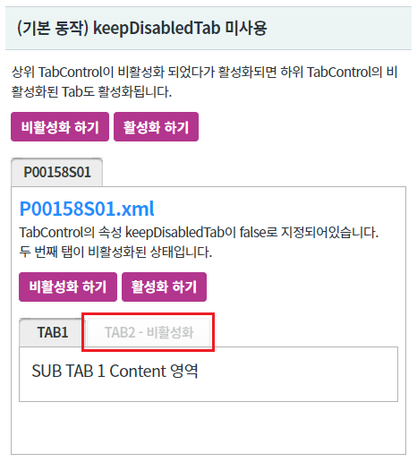
- STEP2. 상위 TabControl을 비활성화 합니다.
버튼 비활성화 하기를 클릭합니다.
- STEP3. 실행 결과를 확인합니다.
상위 TabControl과 하위 TabControl이 모두 비활성화 됩니다.
[브라우저(Chrome) 실행 예시]
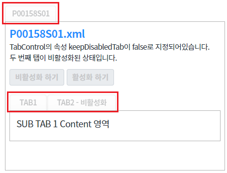
- STEP4. 상위 TabControl을 활성화 합니다.
버튼 활성화 하기를 클릭합니다.
- STEP5. 실행 결과를 확인합니다.
상위 TabControl과 하위 TabControl이 모두 활성화 됩니다.
(기존에 비활성화 되어 있던 하위 TabControl도 활성화됩니다)
[브라우저(Chrome) 실행 예시]
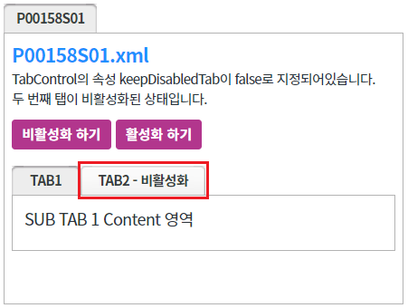
- STEP6. 탭 콘텐츠 화면 초기화 하기
TabControl의 탭 "P00158S01"에 구성된 버튼 화면 초기화를 클릭합니다.
[브라우저(Chrome) 실행 예시]
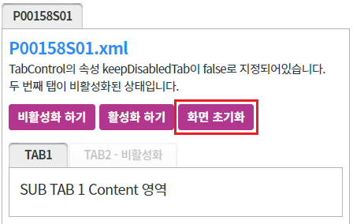
- STEP7. 하위 TabControl 상태 확인하기
TabControl의 탭 "P00158S01"에 구성된 TabControl을 확인합니다.
탭 "TAB2 - 비활성화"가 비활성화 된 상태입니다.
[브라우저(Chrome) 실행 예시]
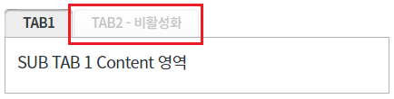
- STEP8. 하위 TabControl을 비활성화 합니다.
TabControl의 탭 "P00158S01"에 구성된 버튼 비활성화 하기를 클릭합니다.
[브라우저(Chrome) 실행 예시]
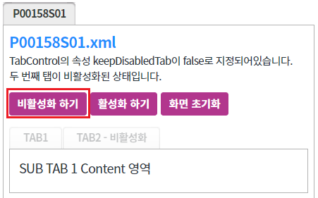
- STEP9. 실행 결과를 확인합니다.
하위 TabControl이 비활성화 됩니다.
[브라우저(Chrome) 실행 예시]
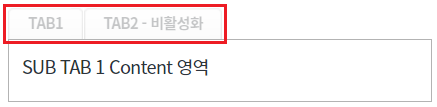
- STEP10. 하위 TabControl을 활성화 합니다.
버튼 활성화 하기를 클릭합니다.
[브라우저(Chrome) 실행 예시]
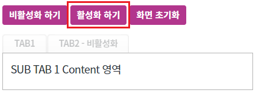
- STEP11. 실행 결과를 확인합니다.
하위 TabControl이 모두 활성화 됩니다.
(기존에 비활성화 되어 있던 Tab도 활성화됩니다)
[브라우저(Chrome) 실행 예시]
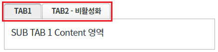
3.2keepDisabledTab 사용
- STEP1. 하위 TabControl 상태 확인하기
영역 [keepDisabledTab 사용]의 TabControl의 탭 "P00158S02"에 구성된 TabControl을 확인합니다.
탭 "TAB2 - 비활성화"가 비활성화 된 상태입니다.
[브라우저(Chrome) 실행 예시]
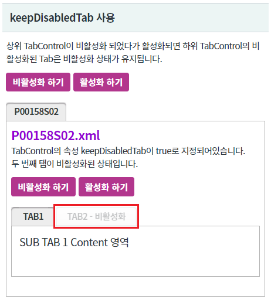
- STEP2. 상위 탭을 비활성화 합니다.
버튼 비활성화 하기를 클릭합니다.
- STEP3. 실행 결과를 확인합니다.
상위 TabControl과 하위 TabControl이 모두 비활성화 됩니다.
[브라우저(Chrome) 실행 예시]
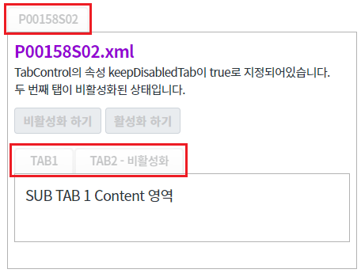
- STEP4. 상위 TabControl을 비활성화 합니다.
버튼 활성화 하기를 클릭합니다.
- STEP5. 실행 결과를 확인합니다.
상위 TabControl이 활성화되고 하위 TacControl의 비활성화 되었던 탭은 상태가 유지됩니다.
[브라우저(Chrome) 실행 예시]
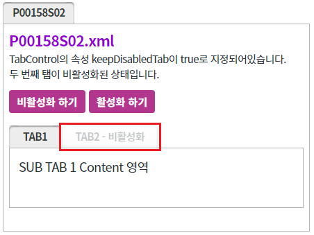
- STEP6. 탭 콘텐츠 화면 초기화 하기
TabControl의 탭 "P00158S02"에 구성된 버튼 화면 초기화를 클릭합니다.
[브라우저(Chrome) 실행 예시]
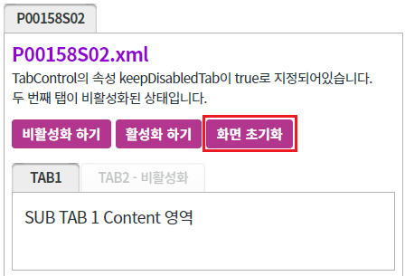
- STEP7. 하위 TabControl 상태 확인하기
TabControl의 탭 "P00158S02"에 구성된 TabControl을 확인합니다.
탭 "TAB2 - 비활성화"가 비활성화 된 상태입니다.
[브라우저(Chrome) 실행 예시]
- STEP8. 하위 TabControl을 비활성화 합니다.
TabControl의 탭 "P00158S02"에 구성된 버튼 비활성화 하기를 클릭합니다.
[브라우저(Chrome) 실행 예시]
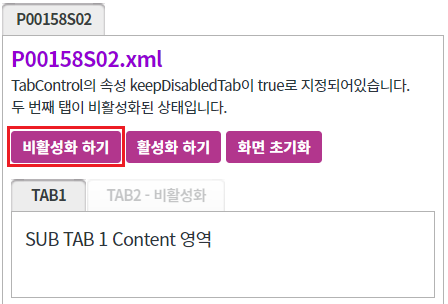
- STEP9. 실행 결과를 확인합니다.
하위 TabControl이 비활성화 됩니다.
[브라우저(Chrome) 실행 예시]
- STEP10. 하위 TabControl을 활성화 합니다.
버튼 활성화 하기를 클릭합니다.
[브라우저(Chrome) 실행 예시]
- STEP11. 실행 결과를 확인합니다.
하위 TabControl이 활성화되고 비활성화 되었던 탭은 상태가 유지됩니다
[브라우저(Chrome) 실행 예시]

4구현 예시
4.1keepDisabledTab 사용하기
- 속성을 정의합니다.
비활성화 상태를 유지할 TabControl에 속성을 정의합니다.
예제의 경우 파일 "P00158S02.xml"에 설정되어있습니다.
[필수] keepDisabledTab="true" //tabControl을 disabled 처리할 경우, 각각의 tab의 disabled 유지 여부.
그림 1.웹스퀘어5 SP5 스튜디오의 Property View(속성창) 예시
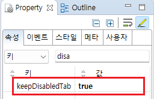
[소스 코드 예시]
<!-- tabControl 소스 본문 예시. 예제 파일 P00158S02.xml --> <w2:tabControl keepDisabledTab="true" id="tac_exam1"> <!-- 중략 --> </w2:tabControl>
5주요 API
keepDisabledTab
disableTab( tabIndex )
setDisabled( disabled )
6참고 문서
[웹스퀘어5 SP5 개발 가이드] TabControl
링크 : https://docs1.inswave.com/sp5_user_guide/2059d4ce88b2fc16#0eeccc9d7fde2d33
[웹스퀘어5 SP5 개발 가이드] TabControl 자식 탭의 비활성화 상태를 유지
링크 : https://docs1.inswave.com/sp5_user_guide/2059d4ce88b2fc16#2ab74385fd134a5f
7참고 동영상
TabControl - 자식 탭의 비활성화 상태를 유지
링크 : https://youtu.be/5BCe5c4avtM
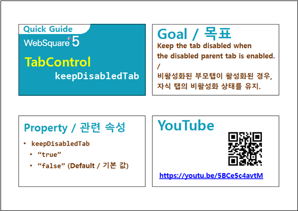